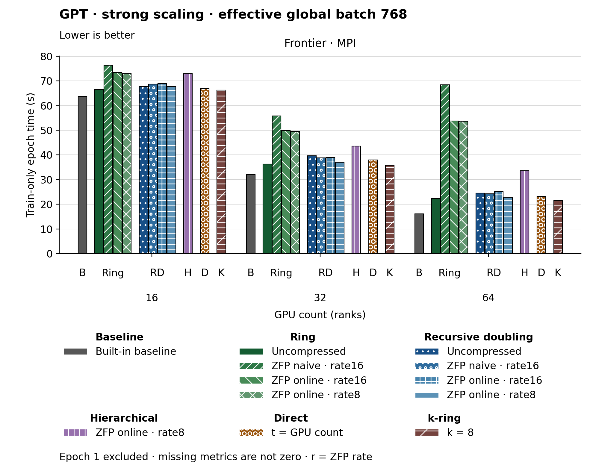

The figure uses bars. Families and methods are identified by text and patterns in addition to color. The metric is Train-only epoch time (s). Frontier · MPI, GPU count (ranks) 16: Built-in baseline has the lowest plotted value, 63.660. Frontier · MPI, GPU count (ranks) 32: Built-in baseline has the lowest plotted value, 32.050. Frontier · MPI, GPU count (ranks) 64: Built-in baseline has the lowest plotted value, 16.170. Epoch 1 is excluded. Values are medians; when repeated runs are available the selected repeat policy is median. These are not confidence intervals across repeated jobs. Missing or unrecorded metrics are omitted, not set to zero.
| Panel | GPU count (ranks) | Method | Value | Runs |
|---|---|---|---|---|
| Frontier · MPI | 16 | none | 63.66 | 1 |
| Frontier · MPI | 16 | ring | 66.47 | 1 |
| Frontier · MPI | 16 | ring_zfp_naive:16 | 76.29 | 1 |
| Frontier · MPI | 16 | ring_zfp_online_coll:16 | 73.39 | 1 |
| Frontier · MPI | 16 | ring_zfp_online_coll:8 | 72.99 | 1 |
| Frontier · MPI | 16 | recursive_doubling | 67.71 | 1 |
| Frontier · MPI | 16 | recursive_doubling_zfp_naive:16 | 68.66 | 1 |
| Frontier · MPI | 16 | recursive_doubling_zfp_online_coll:16 | 68.93 | 1 |
| Frontier · MPI | 16 | recursive_doubling_zfp_online_coll:8 | 67.73 | 1 |
| Frontier · MPI | 16 | direct_p | 66.92 | 1 |
| Frontier · MPI | 16 | hierarchical_zfp_online_coll:8 | 72.99 | 2 |
| Frontier · MPI | 16 | kring_k8 | 66.26 | 1 |
| Frontier · MPI | 32 | none | 32.05 | 1 |
| Frontier · MPI | 32 | ring | 36.35 | 1 |
| Frontier · MPI | 32 | ring_zfp_naive:16 | 55.87 | 1 |
| Frontier · MPI | 32 | ring_zfp_online_coll:16 | 49.86 | 1 |
| Frontier · MPI | 32 | ring_zfp_online_coll:8 | 49.47 | 1 |
| Frontier · MPI | 32 | recursive_doubling | 39.69 | 1 |
| Frontier · MPI | 32 | recursive_doubling_zfp_naive:16 | 38.79 | 1 |
| Frontier · MPI | 32 | recursive_doubling_zfp_online_coll:16 | 38.96 | 1 |
| Frontier · MPI | 32 | recursive_doubling_zfp_online_coll:8 | 37.06 | 1 |
| Frontier · MPI | 32 | hierarchical_zfp_online_coll:8 | 43.63 | 1 |
| Frontier · MPI | 32 | direct_p | 37.97 | 1 |
| Frontier · MPI | 32 | kring_k8 | 35.78 | 1 |
| Frontier · MPI | 64 | none | 16.17 | 1 |
| Frontier · MPI | 64 | ring | 22.37 | 1 |
| Frontier · MPI | 64 | ring_zfp_naive:16 | 68.43 | 1 |
| Frontier · MPI | 64 | ring_zfp_online_coll:16 | 53.82 | 1 |
| Frontier · MPI | 64 | ring_zfp_online_coll:8 | 53.6 | 1 |
| Frontier · MPI | 64 | recursive_doubling | 24.47 | 1 |
| Frontier · MPI | 64 | recursive_doubling_zfp_naive:16 | 24.28 | 1 |
| Frontier · MPI | 64 | recursive_doubling_zfp_online_coll:16 | 25.07 | 1 |
| Frontier · MPI | 64 | recursive_doubling_zfp_online_coll:8 | 22.82 | 1 |
| Frontier · MPI | 64 | direct_p | 23.24 | 1 |
| Frontier · MPI | 64 | kring_k8 | 21.46 | 1 |
| Frontier · MPI | 64 | hierarchical_zfp_online_coll:8 | 33.62 | 1 |